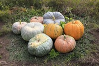

みにかぼちゃ（ミニ南瓜）の生産量 都道府県ランキング
全19県の順位と、とれた量
みにかぼちゃが日本でいちばん多くとれるのは神奈川県です。91 tで、全国（247 t）の37%を占めます。

| 順位 | 都道府県 | 収穫量 | 全国に占める割合 |
|---|---|---|---|
| 1位 | 神奈川県 | 91 t | 37% |
| 2位 | 北海道 | 53 t | 21% |
| 3位 | 熊本県 | 15 t | 6.1% |
| 4位 | 岡山県 | 14 t | 5.7% |
| 5位 | 滋賀県 | 13 t | 5.3% |
| 6位 | 大阪府 | 11 t | 4.5% |
| 7位 | 福岡県 | 10 t | 4.0% |
| 8位 | 愛知県 | 8 t | 3.2% |
| 9位 | 大分県 | 8 t | 3.2% |
| 10位 | 福井県 | 4 t | 1.6% |
| 11位 | 愛媛県 | 4 t | 1.6% |
| 12位 | 宮城県 | 3 t | 1.2% |
| 13位 | 福島県 | 3 t | 1.2% |
| 14位 | 青森県 | 2 t | 0.8% |
| 15位 | 埼玉県 | 2 t | 0.8% |
| 16位 | 山梨県 | 2 t | 0.8% |
| 17位 | 奈良県 | 2 t | 0.8% |
| 18位 | 千葉県 | 1 t | 0.4% |
| 19位 | 長野県 | 1 t | 0.4% |
この数字について
- 分類：ウリ科
- 全国の収穫量：247 t
- この数字が表すもの：収穫量（畑や田でとれた重さ）
- 調査：地域特産野菜生産状況調査 令和6年産
- 19県分を調査（調査していない県は順位に入りません）
みにかぼちゃの生産量について、よくある質問
- みにかぼちゃの生産量が日本一の都道府県はどこですか？
- 神奈川県です。地域特産野菜生産状況調査（令和6年産）で91 tでした。
- みにかぼちゃの生産量ランキング2位・3位はどこですか？
- 2位は北海道（53 t）、3位は熊本県（15 t）です。
- みにかぼちゃの生産量ランキング4位・5位はどこですか？
- 4位は岡山県（14 t）、5位は滋賀県（13 t）です。みにかぼちゃの全19県の順位は上の表のとおりです。
- みにかぼちゃの全国の生産量はどれくらいですか？
- 247 t（令和6年産）です。